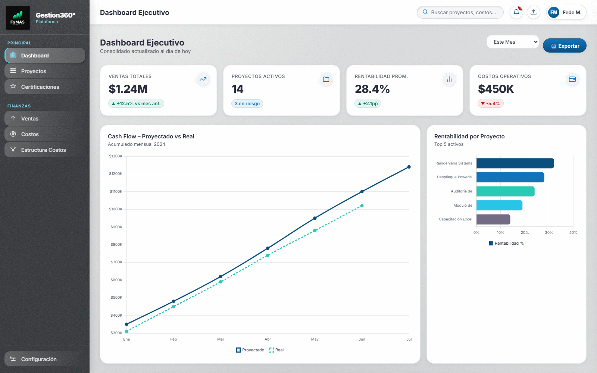

Real Estate
Recorridos virtuales para vender a distancia y control de avance de obra al dia.
Somos FaMAS analytics.IA, un estudio de Mendoza. Ordenamos tus procesos y te armamos tableros de control a medida, para que sepas en cualquier momento como viene tu negocio.
El problema
Planillas por un lado, mails por otro y sistemas que no se hablan entre si. Los reportes se arman a mano, llegan tarde y, para cuando ves el numero en rojo, el mes ya paso.
Como trabajamos
Servicios
Elegi el tema que mas te aprieta hoy.
Flujo de caja, costos y margen por linea de negocio, actualizados solos. Dejas de esperar al cierre del mes para saber como venis.
Avance, certificacion, facturacion y cobranza de cada proyecto en un solo lugar, con el historico de lo que se presupuesto contra lo que termino costando.
Que tenes, donde esta y quien lo usa. Control de equipos, materiales y movimientos sin planillas paralelas.
Tareas repetitivas que hoy te comen horas: carga de datos, armado de reportes y alertas cuando algo se sale de lo previsto.
Clientes
Ademas de los tableros de gestion, desarrollamos soluciones a medida segun el rubro de cada cliente.
Recorridos virtuales para vender a distancia y control de avance de obra al dia.
Showrooms 3D interactivos y control exacto de inventario en tiendas y comercios.
Planificacion visual de los espacios y reservas centralizadas en un solo panel.

Nuestro trabajo
Cada desarrollo sale a medida del cliente, pero el resultado es siempre el mismo: la informacion que antes estaba desparramada, en una sola pantalla que se actualiza sola.
Ver proyectosNo. Arrancamos con lo que ya tenes y conectamos lo que se pueda conectar. Recien proponemos cambiar algo cuando el sistema actual es el que genera el problema.
Si. Cuanto mas chica es la estructura, mas pesa cada hora que se va en cargar datos a mano. Empezamos por un solo modulo y crecemos desde ahi.
Si. Estamos en Mendoza y trabajamos a distancia sin problema; las reuniones de diagnostico y de seguimiento se hacen por videollamada.
Con una charla sin cargo donde nos contas como gestionas hoy. De ahi sale un diagnostico con lo que conviene ordenar primero y una propuesta de trabajo por etapas.
El equipo
Cuatro profesionales de Mendoza que venimos del control de gestion y de la tecnologia. Juntamos la mirada de procesos con el desarrollo a medida, asi el tablero refleja como trabaja tu empresa y no al reves.
Contanos en que se te complica la gestion y te decimos que conviene ordenar primero. Sin cargo y sin compromiso.